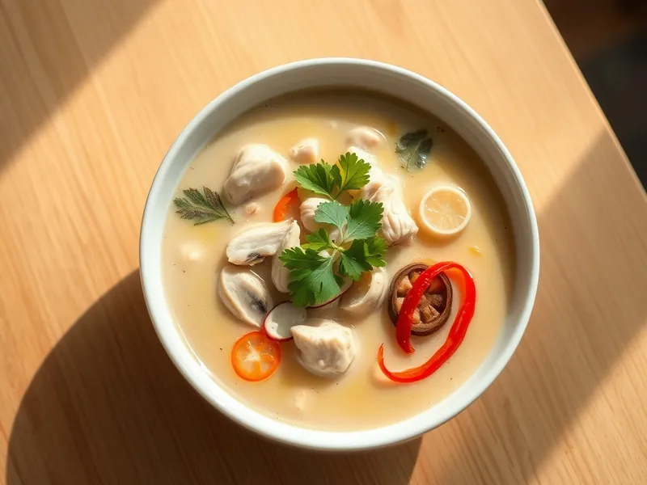

Тайский суп с кокосовым молоком и курицей
Сливочный кисло-острый суп с курицей, шампиньонами и имбирём
25 мин4 порц.346 ккал на порциюБ 29 · Ж 24 · У 7Азиатская кухня
Открыть в приложении: порции, таймеры, список покупок
Продукты на 4 порц.
- Куриное филе400 г
- Кокосовое молоко400 мл
- Шампиньоны200 г
- Имбирь20 г
- Перец чили1 шт
- Лимон0,5 шт
- Соевый соус1 ст. л.
- Сахар1 ч. л.
- Бульонный кубик1 шт
- Вода600 мл
- Кинза0,5 пучка
Как готовить
- Нарежьте курицу тонкими полосками, шампиньоны пластинами, имбирь тонкими кружками, чили колечками. Это займёт 7 минут.
- Доведите воду с бульонным кубиком и имбирём до кипения на сильном огне, влейте кокосовое молоко и убавьте огонь до среднего.
- Положите курицу и грибы, варите 8-10 минут на слабом огне без бурного кипения, пока курица не станет белой внутри.
- Добавьте чили, соевый соус и сахар, прогрейте 1 минуту и снимите с огня.
- Выжмите в суп сок лимона, попробуйте на соль и кислоту, разлейте по тарелкам и посыпьте кинзой.
Совет. Не кипятите суп сильно после кокосового молока, иначе оно расслоится на хлопья. Лимон добавляйте только в конце, от долгой варки он горчит.